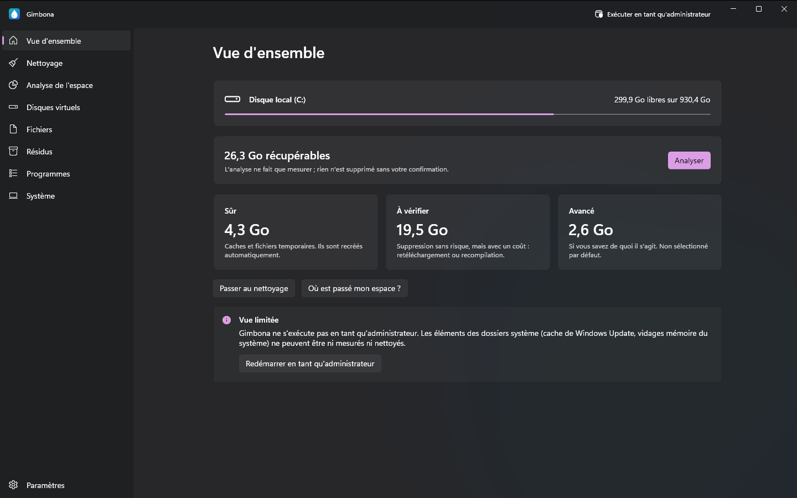
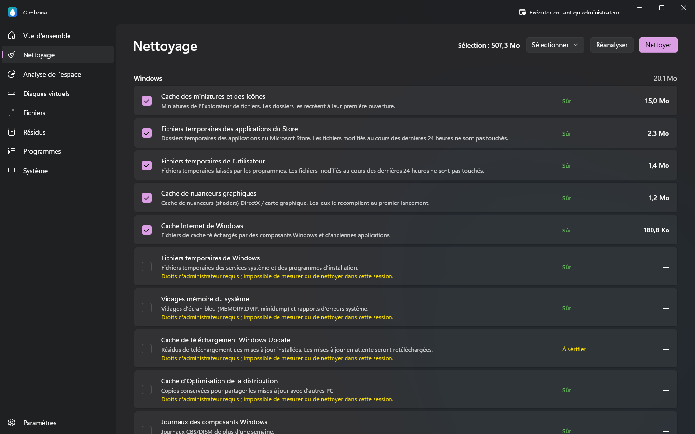
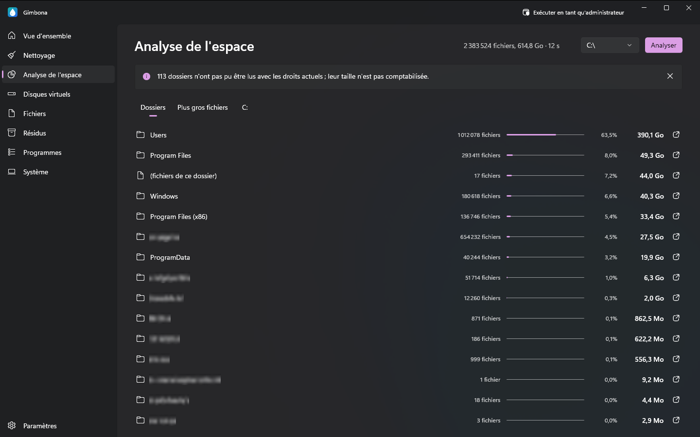
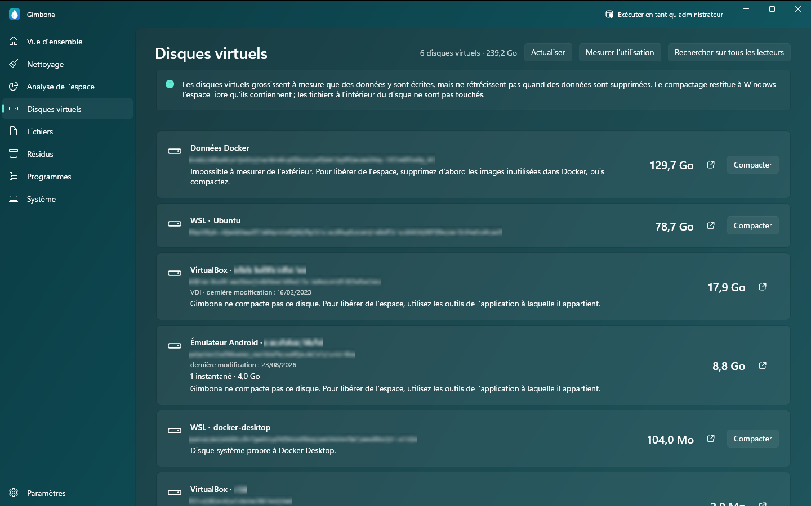

Nettoyage de disque pour Windows : libérer de l'espace disque en toute sécurité
Disque C plein ? Gimbona montre ce qui remplit votre lecteur et vous aide à le nettoyer : fichiers inutiles, fichiers temporaires, caches, restes de Windows Update, gros fichiers et doublons, programmes inutilisés et disques virtuels qui ne font que grossir. L'analyse ne fait que mesurer ; rien n'est supprimé sans votre confirmation.
Télécharger Gimbona sur le Microsoft StoreGratuit pour Windows 10 et Windows 11. Gimbona Pro est un achat unique facultatif, sans abonnement.




Fonctionnalités
- Nettoyage de disque avec un niveau de sécurité pour chaque élément : Sûr, À vérifier, Avancé
- L'analyse ne fait que mesurer ; rien n'est supprimé sans votre confirmation
- Nettoyage des fichiers inutiles, des fichiers temporaires et des caches de Windows, des navigateurs et des applications
- Analyse de l'espace disque par dossier, avec les plus gros fichiers
- Recherche de gros fichiers et de fichiers anciens
- Recherche de fichiers en double
- Résidus de programmes désinstallés
- Programmes installés par taille et dernière exécution
- Désinstallation groupée des programmes inutilisés (Pro)
- Compactage des disques virtuels WSL, Docker et Hyper-V (Pro)
- Nettoyage des caches de développement et de jeux (Pro)
- Nettoyage automatique hebdomadaire ou mensuel (Pro)
- Nettoyage du magasin de composants Windows (WinSxS) et du fichier de mise en veille prolongée (Pro)
- Aucune collecte de données ; tout reste sur votre PC
- Anglais, allemand, espagnol, français et turc
- Thèmes sombre, clair et turquoise
Ce que Gimbona nettoie
Supprimer les fichiers inutiles, les fichiers temporaires et les caches
Gimbona trouve les fichiers temporaires de Windows, les vidages sur incident, les caches de miniatures et de shaders et les restes de Windows Update, ainsi que les caches des navigateurs (Chrome, Edge, Firefox, Brave, Opera) et d'applications comme VS Code, Discord, Slack et Spotify. Chaque élément indique la place qu'il occupe et un niveau de sécurité : Sûr, À vérifier ou Avancé.
Analyser l'espace disque, trouver les gros fichiers et les doublons
Voyez quels dossiers et fichiers occupent votre lecteur, du plus gros au plus petit. Recherchez dans vos dossiers personnels les fichiers volumineux et anciens et les fichiers en double, et repérez les dossiers laissés par des programmes désinstallés. La recherche ne fait que lister ; ce que vous sélectionnez est déplacé vers la Corbeille, d'où vous pouvez le restaurer.
Réduire les disques WSL, Docker et Hyper-V (VHDX)
Les disques virtuels grossissent quand des données y sont écrites, mais ne rétrécissent pas quand elles sont supprimées. Gimbona liste les disques de WSL, Docker Desktop, Hyper-V, VirtualBox, VMware et des émulateurs Android avec leur taille ; Gimbona Pro compacte ext4.vhdx et les autres fichiers VHDX et VHD dynamiques et rend à Windows l'espace libre qu'ils contiennent. Les fichiers à l'intérieur du disque ne sont pas touchés.
Désinstaller les programmes que vous n'utilisez plus
Voyez vos programmes installés par taille et supprimez-les. Lorsque Gimbona s'exécute en tant qu'administrateur, il indique aussi quels programmes n'ont pas été lancés depuis 3, 6 ou 12 mois. Supprimer les programmes un par un est gratuit ; Gimbona Pro en supprime plusieurs en une fois. Les pilotes, les environnements d'exécution et les logiciels de sécurité ne figurent pas dans la liste et ne peuvent donc pas être supprimés par erreur.
La sécurité d'abord
Après l'analyse, seuls les éléments sûrs sont sélectionnés ; les éléments avancés ne le sont jamais par défaut. Gimbona vérifie d'abord l'état de votre disque : si Windows signale que le lecteur doit être réparé, aucun nettoyage n'est effectué. Gimbona ne collecte pas vos données et ne les envoie nulle part.
Questions et réponses
Mon disque C est plein. Que puis-je supprimer sans risque ?
Commencez par les éléments que Gimbona marque comme Sûr : fichiers temporaires, caches, vidages sur incident et restes de Windows Update. Windows et vos applications les recréent au besoin. L'analyse indique l'espace que chaque élément libérerait avant toute suppression.
Peut-on supprimer sans risque les fichiers temporaires et les caches ?
Oui pour les éléments marqués Sûr ; les applications les recréent, tout au plus le premier démarrage est un peu plus lent. Les éléments marqués À vérifier peuvent aussi être supprimés sans risque, mais quelque chose devra être téléchargé ou généré à nouveau. Les éléments avancés s'adressent à ceux qui savent de quoi il s'agit.
Pourquoi mon disque WSL ou Docker (ext4.vhdx) reste-t-il énorme après la suppression de fichiers ?
Un fichier VHDX grossit quand des données sont écrites, mais ne rétrécit pas quand elles sont supprimées. Compacter le disque rend cet espace libre à Windows. Gimbona indique ce qu'un disque WSL peut restituer et Gimbona Pro le compacte ; WSL est arrêté pendant l'opération, et Gimbona vous en informe avant de commencer.
Gimbona supprime-t-il quelque chose de lui-même ?
Non. L'analyse ne fait que mesurer, et le nettoyage ne commence que lorsque vous confirmez. Le nettoyage automatique est un réglage Pro facultatif, désactivé par défaut, qui ne nettoie que les éléments sûrs.
Gimbona est-il gratuit ?
Oui. L'analyse du disque et le nettoyage des fichiers de Windows, des navigateurs et des applications sont gratuits. Gimbona Pro ajoute le compactage des disques virtuels, les caches de développement et de jeux, la désinstallation de plusieurs programmes et le nettoyage automatique, pour un paiement unique, sans abonnement.
Gimbona envoie-t-il mes données quelque part ?
Non. L'analyse et le nettoyage se font uniquement sur votre PC. Gimbona ne contient ni mesure d'audience, ni télémétrie, ni publicité.